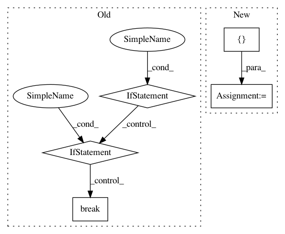

3397e6bfd55584c62d64911ecdaf588ca3469b79,noxfile-template.py,,,#,25
Before Change
// Get root of this repository. Assume we don"t have directories nested deeper than 10 items.
p = Path(os.getcwd())
for i in range(10):
if p is None:
raise Exception("Unable to detect repository root.")
if Path(p / ".git").exists():
REPO_ROOT = str(p)
break
p = p.parent
//
// Helpers and utility functions
After Change
// DO NOT EDIT - automatically generated.
// All versions used to tested samples.
ALL_VERSIONS = ["2.7", "3.6", "3.7", "3.8"]
// Any default versions that should be ignored.
IGNORED_VERSIONS = ["2.7"]
TESTED_VERSIONS = sorted([v for v in ALL_VERSIONS if v not in IGNORED_VERSIONS])
//
// Style Checks
//
In pattern: SUPERPATTERN
Frequency: 3
Non-data size: 5
Instances
Project Name: GoogleCloudPlatform/python-docs-samples
Commit Name: 3397e6bfd55584c62d64911ecdaf588ca3469b79
Time: 2020-04-01
Author: 31518063+kurtisvg@users.noreply.github.com
File Name: noxfile-template.py
Class Name:
Method Name:
Project Name: cesium-ml/cesium
Commit Name: 170f1852bab236942042f6c996f1bc5a0952de94
Time: 2016-01-28
Author: a.crellinquick@gmail.com
File Name: mltsp/util.py
Class Name:
Method Name: check_model_param_types
Project Name: enthought/chaco
Commit Name: 6b07ae6f8e587fd27f9b30ec4922e255b428a794
Time: 2008-08-27
Author: kammeyer@651a555e-23ca-0310-84fe-ca9f7c59d2ea
File Name: enthought/chaco/tools/traits_tool.py
Class Name: TraitsTool
Method Name: normal_left_dclick